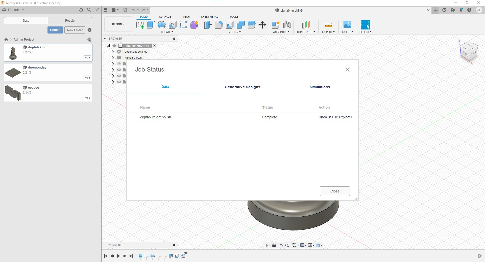
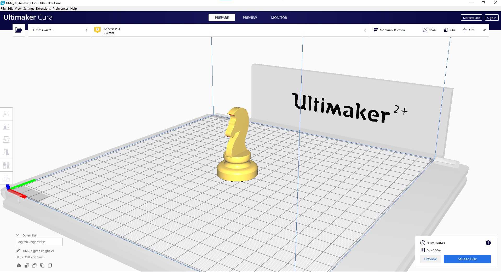
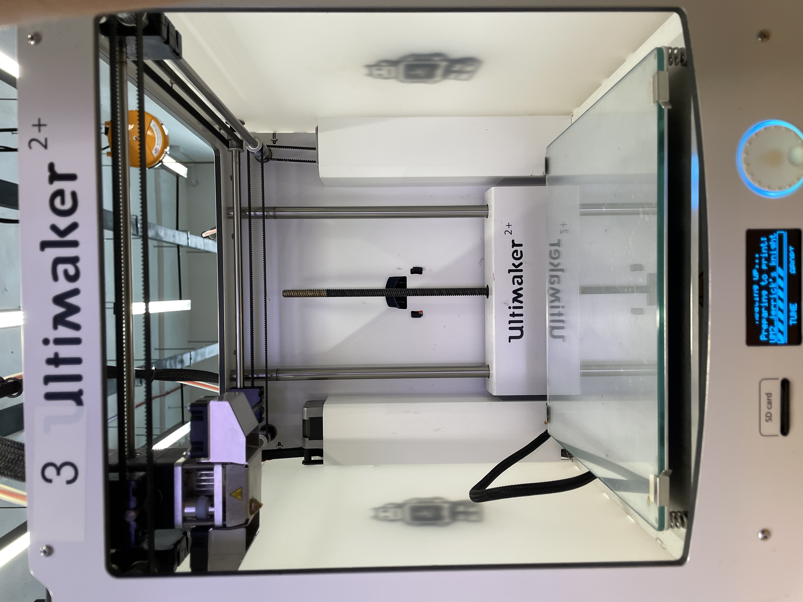
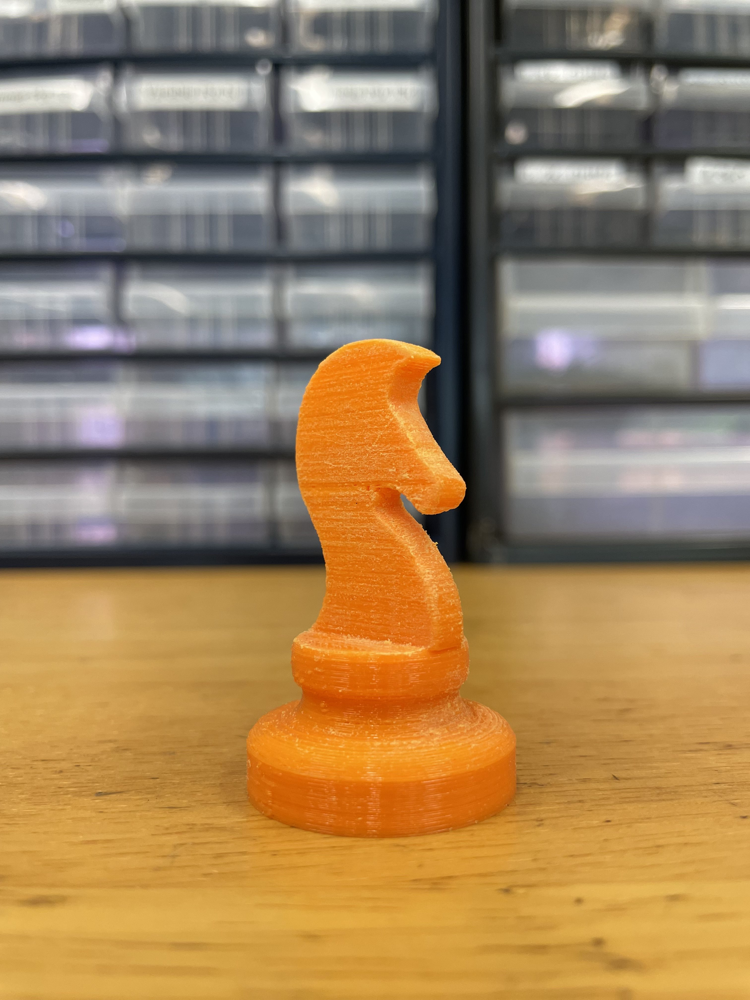
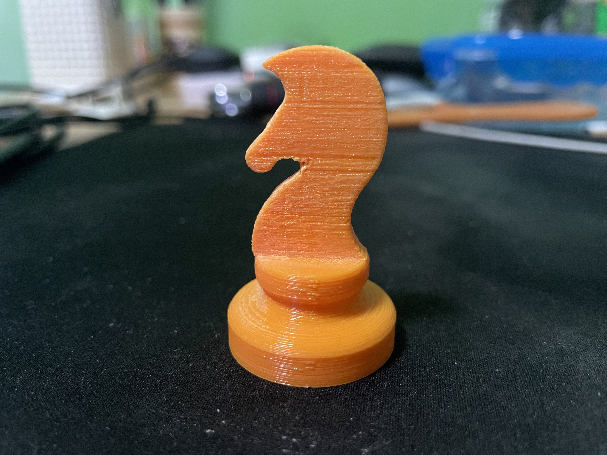
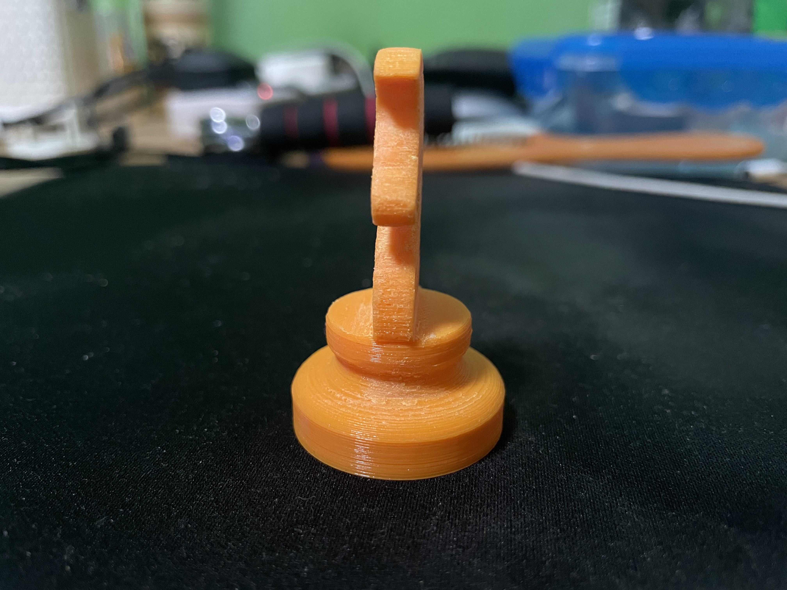

3D Printing
Knight Chesspiece

After getting the 3D model of the knight chesspiece out in Autodesk Fusion 360, the file is then exported into .stl format to be sliced in Ultimaker Cura

The file is loaded into Ultimaker Cura and sliced. The table below shows the settings set in the software before it was sliced.
| Layer height | 0.2mm |
|---|---|
| Infill | 15% |
| Speed | 80mm/s |

After slicing the model in Ultimaker Cura, the file is exported again, but this time in .gcode format and then uploaded onto a SD Card.

The SD card is then inserted into the 3D Printer, which is the Ultimaker 2, and the file is then selected and printed.
Above is a timelapse of the knight chesspiece being printed out.
This is the result of the 3D printed knight chesspiece. However, more still needs to be done. The suppports still needed to be removed and the edges of the chesspiece needed to be sanded for it to be smoother looking.

This is the final result of the knight chesspiece after the supports were removed and the print was sanded.


Different views